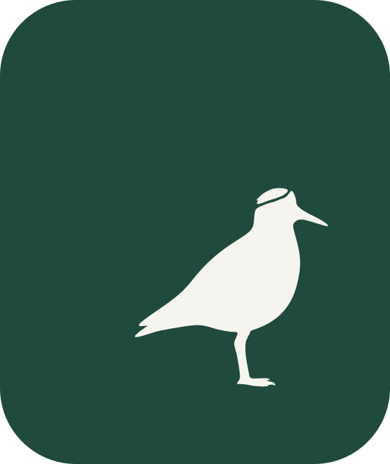

Ingresar el código a mano
Sincronización
Sin sincronizar
Descarga las cancelaciones cuando hay señal. Sin señal, valida igual: la firma del ticket se comprueba en el teléfono.
Ingresos de hoy
0personas
$0efectivo
$0tarjeta

Descarga las cancelaciones cuando hay señal. Sin señal, valida igual: la firma del ticket se comprueba en el teléfono.